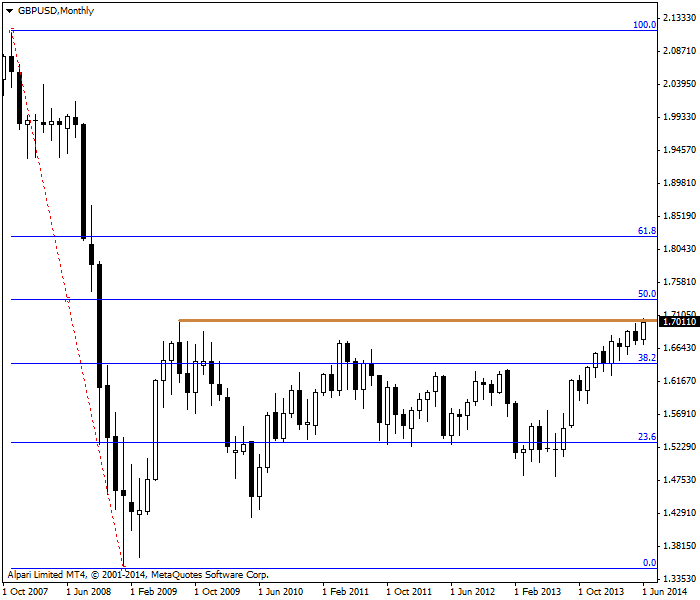
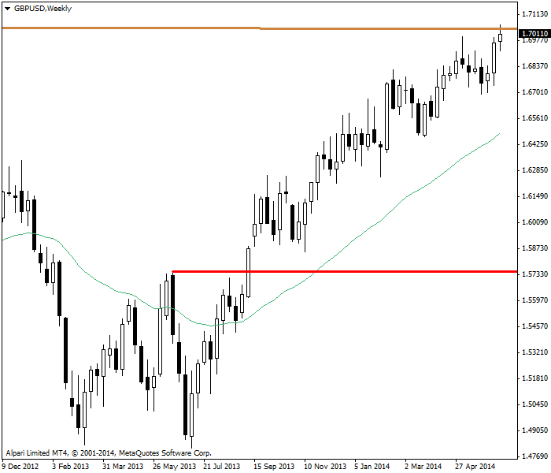
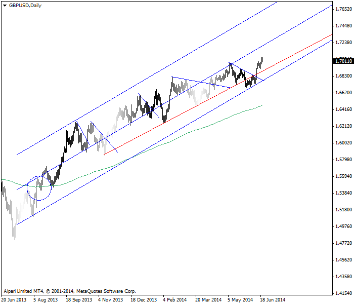

<!DOCTYPE html>
<html>
</html>
<head>
  <meta charset="utf-8">
  <meta http-equiv="X-UA-Compatible" content="IE=edge">
  <title>外汇站（fx-z.com） - 长期交易</title>
  <meta name="description" content="">
  <meta name="viewport" content="width=device-width, initial-scale=1">
  <meta name="robots" content="all,follow">
  <!-- Bootstrap CSS-->
  <link rel="stylesheet" href="vendor/bootstrap/css/bootstrap.min.css">
  <!-- Font Awesome CSS-->
  <link rel="stylesheet" href="vendor/font-awesome/css/font-awesome.min.css">
  <!-- Google fonts - Roboto-->
  <link rel="stylesheet" href="https://fonts.googleapis.com/css?family=Roboto:400,300,700,400italic">
  <!-- owl carousel-->
  <link rel="stylesheet" href="vendor/owl.carousel/assets/owl.carousel.css">
  <link rel="stylesheet" href="vendor/owl.carousel/assets/owl.theme.default.css">
  <!-- theme stylesheet-->
  <link rel="stylesheet" href="css/style.default.css" id="theme-stylesheet">
  <!-- Custom stylesheet - for your changes-->
  <link rel="stylesheet" href="css/custom.css">
  <!-- Favicon-->
  <link rel="shortcut icon" href="img/favicon.png">
  <!-- Tweaks for older IEs--><!--[if lt IE 9]>
    <script src="https://oss.maxcdn.com/html5shiv/3.7.3/html5shiv.min.js"></script>
    <script src="https://oss.maxcdn.com/respond/1.4.2/respond.min.js"></script><![endif]-->
</head>
<body>
  <div id="all">
    <div class="container-fluid">
      <div class="row row-offcanvas row-offcanvas-left"> 
        <!--   *** SIDEBAR ***-->
        <div id="sidebar" class="col-md-4 col-lg-3 sidebar-offcanvas">
          <div class="sidebar-content">
            <h1 class="sidebar-heading"> <a href="https://fx-z.com">fx-z.com</a></h1>
            <p class="sidebar-p">介绍外汇相关的基本知识，告诉您如何进行自己的技术面和基本面分析，讲解先进的交易理念，并且为您阐述失败交易者与专业交易者之间的真正区别。 </p>
            <p class="sidebar-p">通过这些课程的学习，您将学会如何根据自己的优势来应用情绪分析，还将了解真实世界的事件会对货币汇率产生什么影响，央行在外汇市场中所发挥的作用，以及交易者在颇受欢迎的即期外汇交易中有哪些选择方案。 </p>
            <ul class="sidebar-menu">
                <!-- Link-->
                <li class="sidebar-item"><a href="https://fx-z.com" class="sidebar-link">首页</a></li>
                <!-- Link-->
                <li class="sidebar-item"><a href="cihui.html" class="sidebar-link">外汇词汇</a></li>
                <!-- Link-->
                <li class="sidebar-item"><a href="ebook.html" class="sidebar-link">获取外汇电子书</a></li>
            </ul>
            <p class="social"><a href="https://www.cn-forextime.com/zh?partner_id=4920383" target="_blank"data-animate-hover="pulse" class="external facebook"><i class="fa fa-eur"></i></a><a href="https://www.cn-forextime.com/zh?partner_id=4920383" target="_blank" data-animate-hover="pulse" class="external gplus"><i class="fa fa-gbp"></i></a><a href="https://www.cn-forextime.com/zh?partner_id=4920383" target="_blank" data-animate-hover="pulse" class="external twitter"><i class="fa fa-rmb"></i></a><a href="https://www.cn-forextime.com/zh?partner_id=4920383" target="_blank" title="" class="external instagram"><i class="fa fa-dollar"></i></a><a href="https://www.cn-forextime.com/zh?partner_id=4920383" target="_blank" data-animate-hover="pulse" class="email"><i class="fa fa-money"></i></a></p>
            <div class="copyright text-center text-md-left">
             
              
            </div>
          </div>
        </div>
        <!--   *** SIDEBAR END ***  -->
        <!--   *** DETAIL ***-->
        <div class="col-md-8 col-lg-9 content-column white-background">
          <div class="small-navbar d-flex d-md-none">
            <button type="button" data-toggle="offcanvas" class="btn btn-outline-primary"> <i class="fa fa-align-left mr-2"></i>菜单</button>
            <h1 class="small-navbar-heading"> <a href="https://fx-z.com/10-6.html">下一篇 </a></h1>
          </div>
          <div class="row">
            <div class="col-xl-10">
              <div class="content-column-content">
                <h1>长期交易</h1>
    <p>
    长期是指超过一周，有时甚至可以达到数月的持有时间（从入场到离场）。长期持有的一项主要优势是，一旦您确定趋势，您获取的盈利将多于更短周期内的短期交易。您不仅节省交易成本，还节省时间。缺点在于，趋势永远不走直线，而且您需要极大的勇气来等待无法避免的回调。您还需要相信自己有能力区别普通回落和趋势逆转。
</p>
<p>
    最重要的是，长期交易通常需要将基本面分析与技术分析相结合；这是一个复杂而具有挑战性的过程，但可能会使您面临错误或不适用于您的特定交易理念。当图表显示的走势与理念指示的走势存在分歧时，实用的解决办法是抛弃理念。毕竟，技术分析的本质是经验观察。如果观察与理念相冲突，则需要放弃理念。这可能很难做到。例如，欧洲央行于 2014 年 6 月初降息之后，环保慈善机构Greenpeace一度由于押注欧元/美元下跌而亏损了 380 万欧元。这一错误是可以理解的，因为货币通常会在降息环境中下跌。但在这一案例中，其他因素所占的比重更大，包括长期以来由于欧洲央行反通胀的可信度以及对美联储将保持鸽派基调的敏锐看法而看好欧元的偏向。
</p>
<p>
    长期交易者往往使用每日图，但也可以使用每周图，甚至每月图。请考虑下图中的 GBP/USD 每月图表2007 年 11 月最高价为 2.1161（全球经济危机爆发），而 2009 年 1 月最低价为 1.3498。在该时段准确分析英国行情的人都通过做空获取了巨额利润。更有趣的是行情恢复过程。注意，2009 年 8 月，价格从低点一路反弹至 1.7042，超过斐波那契 38.2% 回调位，但低于 50% 回调位。在此之前，精明的分析师可以预见盘内调整状态，并将在 1.5066 附近买入。当价格最终超过前一个高点（1.7062）时，真正的长期交易者会在 2014 年 6 月始终做多英镑吗？那些进行长期交易的人并未披露这些信息，但许多“全球宏观”对冲基金以及一些主权财富基金确实以这种方式交易。
</p>
<p>
     该月度图表上，GBP/USD 首先下跌，然后又恢复了损失。
</p>
<p>
    请注意，2010 年 5 月该交易差点遭遇近乎灾难性的回落，并进入长达三年的区间盘整状态，尽管盘整区间比较宽。2014 年 6 月之前，任何基于市值来判断交易绩效的人只会获得微小的收益。
</p>
<p>
    另一个更让人满意的长期交易版本为稍短一些的时段——即数月，而不是数年。请查看下列每周图表。我们可以在 1.5751 见到由红色水平线确认的双重底。数周后，价格越过了绿色 40 周（200 日）移动平均线。我们已确定在 2013 年 11 月底以 1.6226 的价格买入。截止图表结束，市值收益为 836 点。
</p>
<p>
     在 GBP/USD 每周图表的双重底以下和移动平均线突破的位置交易似乎更具吸引力。
</p>
<p>
    这一收益展示了长期交易的两个特征：首先，您需要耐心以及让您完全信任的指标，即使是双重底形态和 40 周移动平均线等简单指标。您原本可以使用其他让您更快进入市场的指标，但请记住，您不是在进行积极的短期交易。您希望连续持有数月。而该交易已持续七个月。其次，长期交易从入场到离场之间的收益往往是巨大的。
</p>
<p>
    长期交易还有一个时间更短的采用每日图表的版本。它使用 200 日移动平均线以上的价格交叉点来确定入场点。入场时间更早，是 8 月，而不是 11 月，而且入场价格为 1.5508。截止图表数据结束，市值收益为 1554 点。这一收益非常大，而且只用到一个简单的指标。图表还显示用于标记临时回调的对角线，这也是长期交易者可以接受的。此外，图上还有一条红色支撑线；该支撑线断裂之前曾与线性回归通道平行 6 个月。长期交易者并未慌乱或者在这个突破点离场，因为通道本身并没被打破。此外，长期交易者一直关注着以下新闻：英国强劲的经济复苏，以及央行行长关于加息或早于预期的评论。
</p>
<p>
     GBP/USD 每日图表上的上升通道交易
</p>
<p>
    本例使用毫不花哨的简单基础指标来显示，长期交易可能比日内交易更简单，而且压力更小。长期交易不采用动量和波动性指标，只采用趋势跟踪指标。只采用趋势跟踪指标的缺点在于，它们不能在区间盘整交易和无趋势市场中为您提供较好的指导。
</p>
<p>
    <br/>
</p>
<p>
    <br/>
</p>
              </div>
            </div>
          </div>
        </div>
      </div>
    </div>
  </div>
  <!-- JavaScript files-->
  <script src="vendor/jquery/jquery.min.js"></script>
  <script src="vendor/popper.js/umd/popper.min.js"> </script>
  <script src="vendor/bootstrap/js/bootstrap.min.js"></script>
  <script src="vendor/jquery.cookie/jquery.cookie.js"> </script>
  <script src="vendor/owl.carousel/owl.carousel.min.js"></script>
  <script src="vendor/masonry-layout/masonry.pkgd.min.js"></script>
  <script src="js/front.js"></script>
</body>